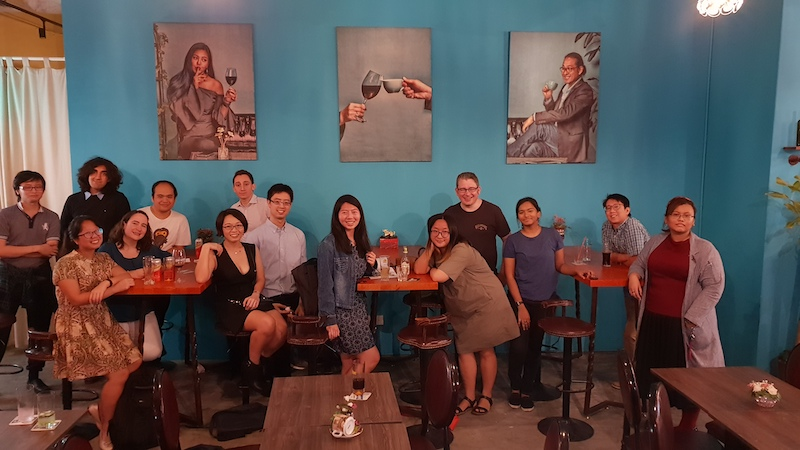
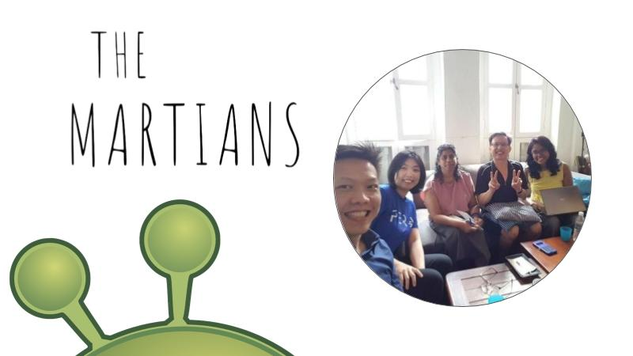
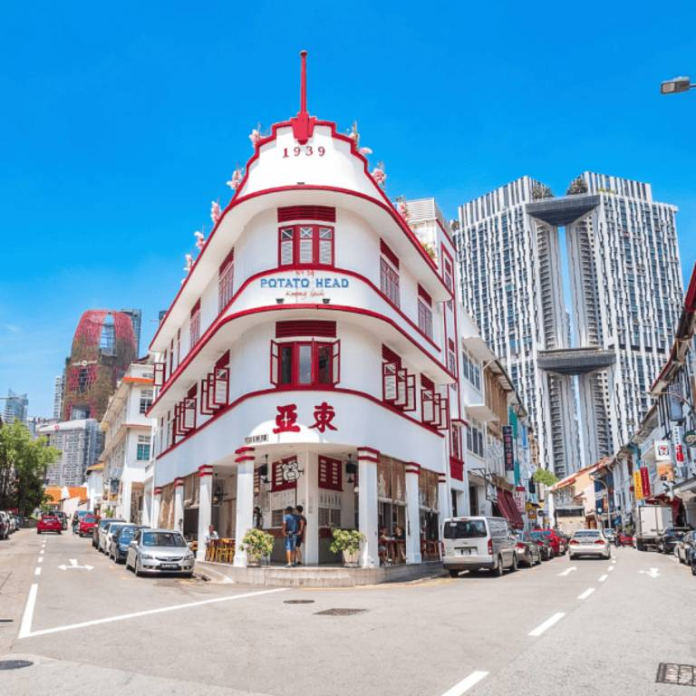

Singapore | Kuala Lumpur | Bangkok | Saigon | Jakarta | Manila
We facilitate conversations about the impact of "digital" on the way we communicate, work and learn. Building yet another app or web portal doesn't do the trick, we're all about creating experiences in the real world.
Today, businesses of all sizes are looking to build data-driven & hyperconnected business models like Uber, AirBnb, Expedia. They want to offer amazing services, great end user experiences - and ultimately, become true innovators and stay ahead of the competition. How do they get there? And how can they find a balance between keeping their legacy and allowing change?
More and more aspects of our lives are moving into the digital space and we are confronted with unprecedented questions. Drones, self-driving cars, ransomware, digital identities, Wikileaks, the increasing pace of innovation and the impact on culture, safety, privacy, education and the workplace. Problems that are impossible to solve with yet another app or web portal.

We're a growing team of passionate, purpose-driven & well-connected professionals working at the intersection of people & technology. What drives us is the quest for answers, the desire to give back to the community and making a local impact. Through open collaboration & communication combined with deep expertise and appreciation for both sides of the story, we can tackle the big questions together. We offer consulting, mentorship, help with professional development & career advice, connecting people and organizing meaningful events.


Geeks, street philosophers, and junk food enthusiasts meeting over drinks to discuss current affairs and hot topics at the intersection of technology and humanity. The impact of 'digital' on the way we communicate, work and learn. The question whether there's intelligent life on earth. And sometimes, it's really just about where in town they serve the best kebab.

Global minds with flexible working hours – staying productive together, inspiring one another, and having fun!
Have you ever felt like you lived in your own timezone? You could be a solo founder trying to get your startup off the ground, an office worker whose colleagues are spread out in different parts of the world, or a freelancer whose schedule depends on what projects you have taken on at the moment.
We aim to find creative ways to stay functional, take advantage of our flexible schedules to explore venues together, and to open our minds to new ideas and people.

This is Friday Breakfast, where open-minded people across cultures and languages meet over coffee to network, discuss current affairs, and make new friends!

Sotong Kitchen is a nonprofit organization with no monetary rewards. We offer work with purpose and great opportunities to meet interesting people, grow your expertise and help make an impact on the community and peoples' lives. If our story speaks to you in any way, please reach out and let's have a conversation on how you would like to help. Let us make sure it counts!
© 2020 Sotong Kitchen | Singapore